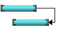
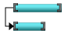
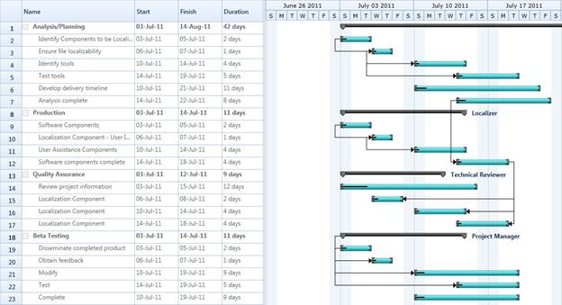

Dependency relationship is the relationship between two tasks. These relationship has been caterogrised into four types based on the start and finish date of the task. They are:
· FinishToStart
· FinishToFinish
· StartToStart
· StartToFinish
Finish-to-start – You cannot start a task until the other task is completed.
Figure 18: Finish-to-start
Finish-to-finish - You cannot finish a task until the other task is completed.

Figure 19: Finish-to-finish
Start-to-start – You cannot start a task until the other task is also started.

Figure 20: Start-to-start
Start-to-Finish – You cannot finish a task until another the other task is started.
Figure 21: Start-to-Finish
Properties
|
Property |
Description |
Type |
Data Type |
Reference links |
|
Prodecessor |
This enables you to set the relationship between the task. |
Object |
Object |
NA |
|
GanttTaskRelationship
|
This contains four relationships. They are: StartToStart StartToFinish FinishToFinish FinishToStart You can asign this to the TaskDetails to set the relationship between tasks. |
Predecessor |
Enum |
NA |
Specifing the Relationship between Tasks
The following code illustrates how to add the Dependency Relationship between tasks:
|
[C#] GanttItemSource = new ObservableCollection<TaskDetails>(); GanttItemSource = GetDataSourceStartToStart();
ObservableCollection<TaskDetails> GetDataSourceStartToStart()
TaskName = "Scope", StartDate = new DateTime(2011, 1, 3), FinishDate = new DateTime(2011, 1, 14),
Progress = 40d }); TaskName = "Determine project office scope", StartDate = new DateTime(2011, 1, 3), FinishDate = new DateTime(2011, 1, 5),
Progress = 20d }); TaskName = "Justify Project Offfice via business model", StartDate = new DateTime(2011, 1, 6), FinishDate = new DateTime(2011, 1, 7),
Progress = 20d }); TaskName = "Secure executive sponsorship", StartDate = new DateTime(2011, 1, 10), FinishDate = new DateTime(2011, 1, 14), Progress = 20d }); task[0].Child.Add(new TaskDetails { TaskId = 5, TaskName = "Secure complete", StartDate = new DateTime(2011, 1, 14), FinishDate = new DateTime(2011, 1, 14), Progress = 20d });
//Adding dependency
relationShip
GanttTaskRelationship = GanttTaskRelationship.StartToStart }); task[0].Child[2].Predecessor.Add(new Predecessor() { GanttTaskIndex = 3, GanttTaskRelationship = GanttTaskRelationship.StartToFinish });
GanttTaskRelationship = GanttTaskRelationship.FinishToFinish }); return task; } |

Figure 22: Dependency Relationship
Samples Link
To view samples:
1. Select Start -> Programs -> Syncfusion -> Essential Studio x.x.xx -> Dashboard.
2. Click Run Samples for Silverlight under User Interface Edition panel .
3. Select Gantt.
4. Expand the Connectors Features item in the Sample Browser.
5. Choose the Predecessor samples to launch.
 Dynamic Predecessors and
Resources
Dynamic Predecessors and
Resources